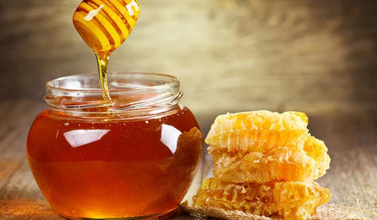
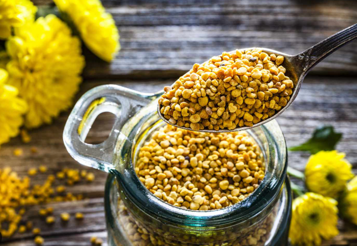
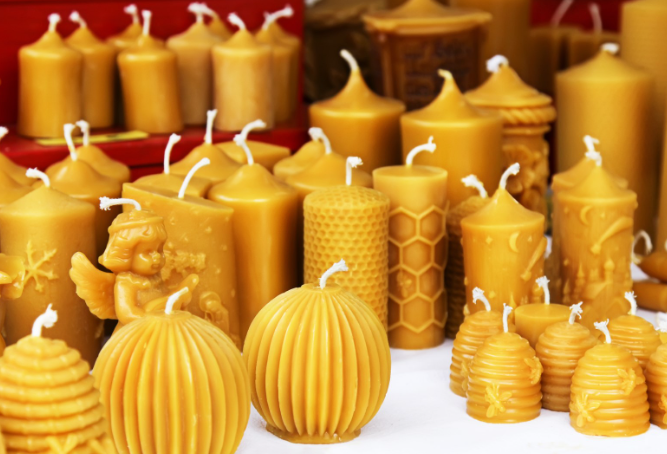
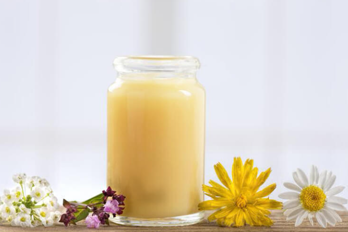
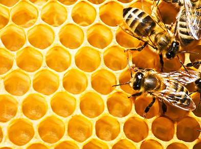
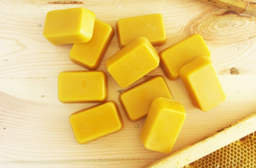
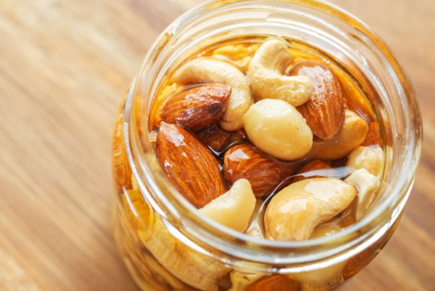

Пчелен мед и пчелни продукти
Пчелният мед е дар от природата, съчетаващ вкус, аромат и безценни ползи за здравето. Вярваме в силата на пчелите, затова споделяме знания, съвети и традиции, които помагат да се запази чистотата и качеството на пчелните продукти.
Независимо дали търсиш здравословна алтернатива на захарта, натурални средства за подкрепа на организма или просто искаш да научиш повече за света на пчелите – тук си на правилното място.
Разгледай страниците „Продукти“ и „За нас“, а ако имаш въпрос – пиши ни през „Контакти“.
Източник: https://food.ndtv.com/health/11-amazing-honey-benefits-boosts-immunity-treats-cough-and-more-1397491
Пчелен мед
Акациев, липов, билков – кой за какво е подходящ?
Източник: https://food.ndtv.com/health/11-amazing-honey-benefits-boosts-immunity-treats-cough-and-more-1397491
Пчелен прашец
Какво представлява и как се приема.
Източник: https://www.health.com/bee-pollen-benefits-8713548
Прополис
Естествен продукт, използван традиционно.

Източник: https://www.puls.bg/bio-produkti-c-41/propolis-za-kakvo-mozhe-da-ni-e-polezen-naistina-n-37490
Восъчни свещи
Восъчни свещи – аромат и уют.
Източник: https://iogas.com/
Пчелно млечице
Ценна храна за пчелната майка.
Източник: https://ghoney.bg/pchelno-mlechice-kolko-dalgo-da-priemame/
Пчелна пита
Мед в естествената му форма.
Източник: https://bee.net.ua/bg/bdzholini-soti/
Пчелен восък
Използва се в козметиката и фармацията.
Източник: https://raya.bg/pchelni-produkti/naturalen-pchelen-vosk-prechisten-kyulche-70-g.html
Мед с ядки
Комбинация от мед и натурални ядки.
Източник: https://bioexperts.org/bg/pchelen-med-ss-surovi-jadki:-polezni-svoistva-i-hranitelni-veschestva-166.html